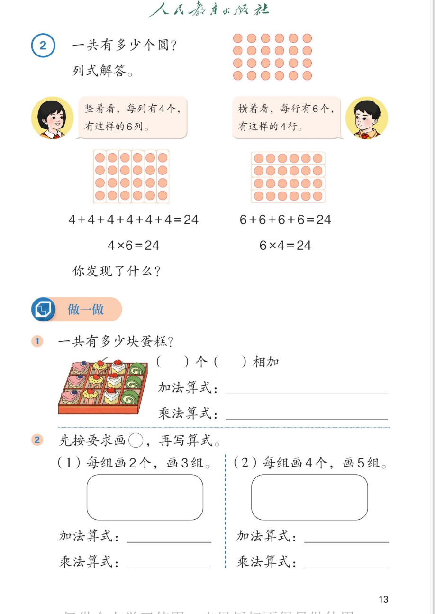

🔵 1~6的表内乘法 · 课本第 13 页 · 例2 一共有多少个圆
人教版《数学》二年级上册 · 有声图文带读 · 先想后看解析
题数
6
认知
2
强化
3
拓展
1
本页重点
换个角度看，乘法算式不同、积相同
🎧 分两步学：
① 解析教材图片
——纯声音读图，读到哪一块哪一块闪动提示；关键处先倒计时让你思考，再在图片下方给出解析并朗读。
② 分层提问练习
——六道分层题（认知 / 强化 / 拓展），先思考再展开解析、朗读参考答案；这一步不再回到图片。
也可以随时点任意一句话、图上任意一块单独听；点课本文字卡还会展开答案。
教材图片（点块听读，读到哪块哪块闪）

📖 人教版《数学》二年级上册 · 课本第 13 页 · 图片仅供个人学习，版权归人民教育出版社所有
🤔 想一想（点我可跳过）
课本的文字（点句子：听读 + 看答案）
课本例2
一共有多少个圆？列式解答。
看答案 ▾
同一幅图，可以有两种看法：
竖着看、横着看。
两种看法列出的加法算式不同，但
总数都是 24 个
。
小女孩的说法
竖着看：每列 4 个，有 6 列 → 4+4+4+4+4+4=24，4×6=24
看答案 ▾
竖着看：
6 个 4 相加
。
加法：4+4+4+4+4+4=
24
；乘法：
4×6=24
（4 是每列个数，6 是列数）。
小男孩的说法
横着看：每行 6 个，有 4 行 → 6+6+6+6=24，6×4=24
看答案 ▾
横着看：
4 个 6 相加
。
加法：6+6+6+6=
24
；乘法：
6×4=24
（6 是每行个数，4 是行数）。
课本问题
你发现了什么？
看答案 ▾
发现一：
4×6=24，6×4=24——
乘数交换位置，积不变
。
发现二：
同一幅图，
看的角度不同
（横看竖看），列出的乘法算式就不同，但总数一样。
发现三：
6 个 4 相加 和 4 个 6 相加 结果相同。
做一做 1
一共有多少块蛋糕？（ ）个（ ）相加；加法算式：＿＿；乘法算式：＿＿
看答案 ▾
数一数：
蛋糕盒里
4 列、每列 3 块
（也可看成 3 行、每行 4 块）。
按列看：
4 个 3 相加 → 3+3+3+3=12，
3×4=12
；
按行看：
3 个 4 相加 → 4+4+4=12，
4×3=12
。
两种填法都对——和例 2 一样，换个角度算式不同、得数相同。
做一做 2
先按要求画○，再写算式：(1) 每组画 2 个，画 3 组；(2) 每组画 4 个，画 5 组
看答案 ▾
(1) 每组 2 个、3 组：
○○ ○○ ○○
加法：2+2+2=
6
；乘法：
2×3=6
（3 个 2 相加）。
(2) 每组 4 个、5 组：
○○○○ ×5 组
加法：4+4+4+4+4=
20
；乘法：
4×5=20
（5 个 4 相加）。
分层提问练习（先想后看解析）
↕️
认知
竖着看，圆怎么列式？是几个几相加？
看解析
🤔 想一想
解析：
列式：
4+4+4+4+4+4=24（6 个 4 相加）→ 4×6=24
每列
4
个，
6
列。
↔️
认知
横着看，圆怎么列式？是几个几相加？
看解析
🤔 想一想
解析：
列式：
6+6+6+6=24（4 个 6 相加）→ 6×4=24
每行
6
个，
4
行。
💡
强化
4×6 和 6×4 都是 24，你发现了什么？
看解析
🤔 想一想
解析：
乘数交换位置，积不变
：4×6=6×4=24
横看竖看角度不同，算式不同，
总数一样
6 个 4 相加 与 4 个 6 相加，结果相同
💡 这个发现以后背口诀能少记一半，非常重要
🍰
强化
蛋糕题：几个几相加？加法、乘法算式怎么写？
看解析
🤔 想一想
解析（两种都对）：
按列看：
4 个 3 相加 → 3+3+3+3=12 → 3×4=12
按行看：
3 个 4 相加 → 4+4+4=12 → 4×3=12
🌈 和例 2 一样：角度不同、算式不同、积相同
⭕
强化
每组画 4 个、画 5 组：加法、乘法算式怎么写？
看解析
🤔 想一想
解析：
加法：
4+4+4+4+4=20（5 个 4 相加）
乘法：
4×5=20
4 是
每组的个数
，5 是
组数
，20 是
积
。
🚀
拓展
教室或家里找一找：哪些物品摆放「横竖成行」？说说几个几。
看解析
🤔 想一想
解析（开放题）：
例一：
课桌每排 4 人、5 排 → 5 个 4 相加，4×5=20。
例二：
书架每层 6 本书、3 层 → 3 个 6 相加，6×3=18。
🌈 横竖两种看法都能说清、算式合理都算对
① 解析教材图片
② 分层提问练习
⏹ 停止
纯声音 + 高亮跟随 · 想好才出解析
← 返回导航